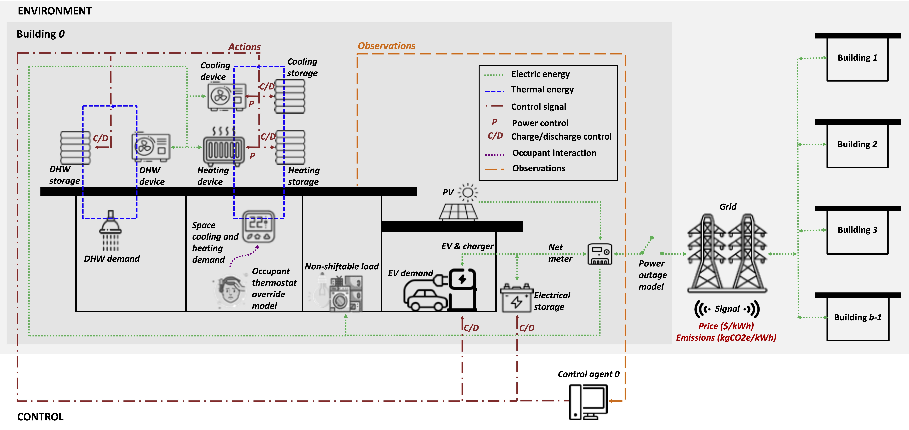

Environment
A CityLearn environment combines buildings, devices, input time series and a controller interface. The schema selects the equipment and services present in each scenario. At every timestep, controllers receive observations and return actions; the environment applies those actions, advances device and service states, and returns observations, rewards and episode status.
Buildings and devices
Buildings have non-shiftable electricity demand and may include PV, batteries, EV chargers, flexible appliances and cooling, heating or domestic-hot-water systems. Heat pumps and electric heaters supply thermal demand; thermal storage shifts part of that supply in time. The diagram below describes the building’s thermal and electrical energy paths.

Thermal demand can come from precomputed or measured profiles. Dynamic-temperature
building models instead use a learned temperature model to relate supplied
heating or cooling to indoor conditions [19]. This permits
partial-load control and evaluation of its comfort consequences. Device
autosizing is available through the building API, including
citylearn.building.Building.autosize_electrical_storage() and
citylearn.building.Building.autosize_pv().
Communities and services
In v3, scenarios can also configure total and per-phase electrical-service limits, local energy sharing and settlement, demand-response requests, changing members or assets, and observation or equipment failures. These features are enabled explicitly; they are not automatically present in every dataset. The Features and configuration guide links each feature to its configuration, actions and performance indicators.
Power outages constrain available grid supply. Outside an outage, a scenario without configured electrical-service limits has an unconstrained grid connection. Configured limits model active-power service constraints, not distribution-network voltage or AC power flow.
Controller interface
Use flat mode for fixed observation/action vectors and standard RL wrappers. Entity mode exposes identified tables, masks and relationships and supports dynamic topology. Central-agent mode combines the buildings’ control into one agent interface; decentralized mode provides an interface per building. See Flat and Entity Interfaces for the exact contracts.
Your first simulation provides a complete reset–step–evaluate loop. Multi-Community Reference extends it to synchronized independent communities with local and portfolio-level results.